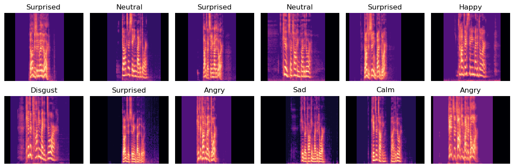
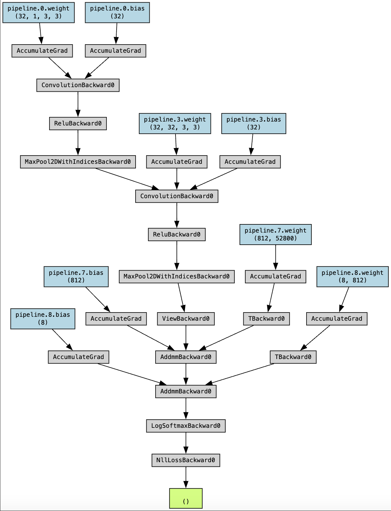
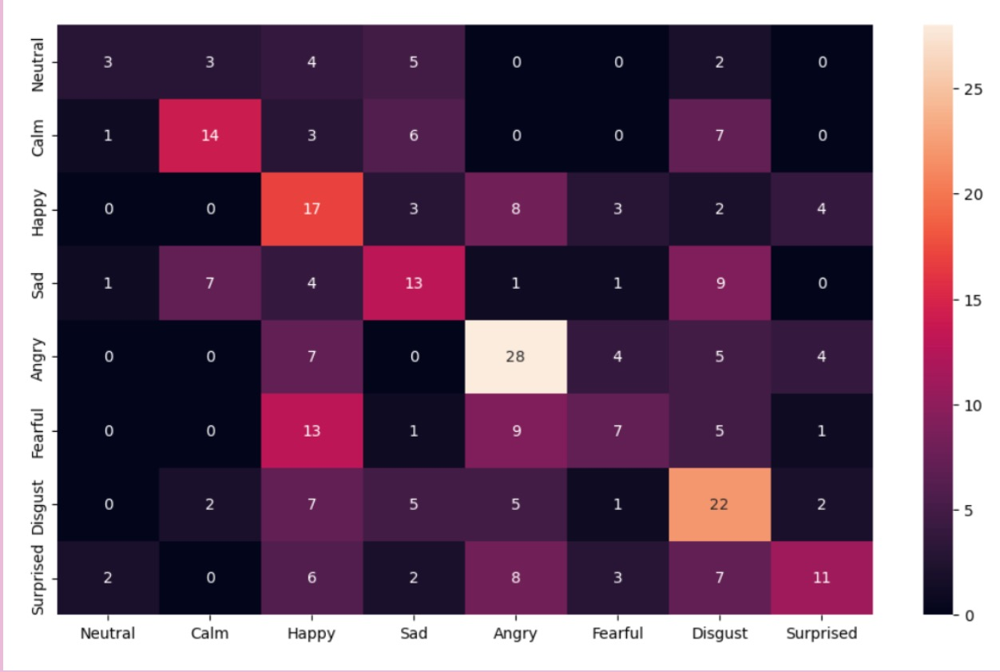
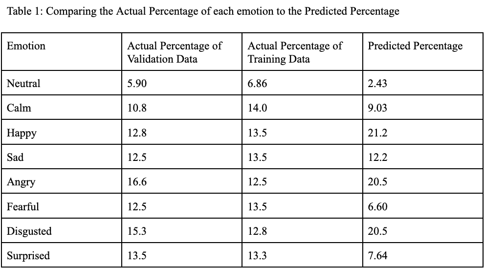

Note
The first seven sections of this blog post were completed collaboratively with my partner Otis.
The final personal reflection section was completed individually.
Abstract
Speech emotion classification is imperative for successful speech recognition since tone can fundamentally change the meaning of a phrase. We attempt to classify the Ryerson Audio-Visual Database of Emotional Speech and Song into 8 different emotions. We successfully improved on the base rate of 16.6% with a CNN model that had a validation accuracy of 39.9%. While this is a significant improvement, our model still displayed overfitting and we hope to improve overall accuracy in the future.
Here is a link to our source code.
Introduction
Speech emotion recognition falls under the category of affective computing which aims to investigate interactions between humans and computers, and inform the optimization of these exchanges (Cambria et al. (2017)). While currently there are many different models being developed to address the limitations in the field, some studies have explored the use of Convolutional Neural Networks (CNNs) combined with Mel spectrograms. As Ong et al. writes, CNNs “excel at capturing local patterns and spectral information, but struggle with modeling long-term dependencies and sequential dynamics present in speech signals” (Ong et al. (2023)). In our investigation we sought to examine how a CNN would perform on classifying emotions based on mel-spectrograms with fourier transforms.
Much of the contemporary literature surrounding Sound Classification involves the use of CNNs on Mel spectrograms. In 2019, Zeng et al. used a deep neural network called GResNets to classify emotions using the RAVDESS dataset and recorded an accuracy of 64.48% (Zeng et al. (2019)). Their model aimed to expand upon a CNN based model using linear connections to assist with training their CNNss. In 2021, Zhang et. al experimented using the TAU Urban Acoustic Scenes 2019 developmental dataset, and aimed to distinguish between 10 different types of acoustic scenes, such as airports or shopping malls. When inputting the full Mel spectrogram they achieved a highest classification accuracy of 67.53%. They also determined that their model using CNNs and Mel spectrogram feature representations outperformed the existing system of directly inputting an entire Mel Spectrogram by 5.64% (Zhang et al. (2021)). In 2023, Ong et. al. combined Mel spectrograms with Short-Term Fourier Transforms with Multiscale Vision Transformers in order to automatically identify and classify emotions from speech signals. Their model achieved 81.75% classification accuracy on the RAVDESS dataset, which is the same dataset we chose to investigate (Ong et al. (2023)). While much of the research takes slightly different approaches and adds additional hyperparameter tuning and models, a substantial amount of the contemporary literature we encountered involved using Mel Spectrograms and CNNs as a basis for their models. In our investigation we chose to focus on this first step of Speech Emotion classification, in order to develop a better understanding of the field.
There are a number of benefits to being able to classify emotions from audio files, because so much of understanding human speech is dependent on the tone in which it is spoken. Tone provides a contextual basis that allows a person to distinguish between a friendly and joking “I hate you” and an angry and threatening “I hate you”. Things like irony and sarcasm can be difficult to pick up on which can lead to gaps in understanding and conversation. Optimizing a computer’s ability to contextualize the speech it is hearing could lead to technological advancements that also benefit human to human interaction. In 2018, Goy et al. investigated how hearing aids affect a person’s ability to discern emotion through speech. As they write, “Successful communication depends on the perception of nonlinguistic as well as linguistic information” (Goy Huiwen et al. (n.d.)). Studies have shown that older adults with hearing loss have more difficulty with auditory emotion perception. Goy et al. determined that despite improving an adult’s ability to understand the phrase said, the amplification of the sound did not allow for significant improvement of emotion-identification accuracy. Work in speech emotion recognition could allow for technological improvements that assist for effective communication between not only humans and machines, but also between humans and is an important area of exploration.
Values Statement
Our project could overall improve machines that are trying to interpret human emotion. This could be important in any device that uses speech because understanding tone is crucial for understanding human speech. In this way, our model could help anyone who wants to have speech recognition on their devices for ease of use. It could also help blind or seeing impaired people because their speech could be better read by a device. While we’re excited about the prospects of our project, we understand that it will exclude the majority of English speakers and all non-English speakers. This is because our training data only contains American English voices. This means that our models will most likely work significantly worse for people in different countries or with accents. We understand that this may perpetuate existing algorithmic inequities and possible xenophobic or racist attitudes. However with this understanding and the knowledge that we won’t spread our model, we feel comfortable undertaking our project as a learning exercise.
Overall, we believe that our project offers a crucial stepping stone for language comprehension. While our project in its current form will most likely exclude people, it offers a methodology that future research can build on with more comprehensive data. We hope that our project also serves to teach us valuable insights about emotion classifications and audio vectorization.
Materials and Method
Data This investigation relied on the Ryerson Audio-Visual Database of Emotional Speech and Song (RAVDESS) (Livingstone and Russo (2018)), which we accessed through Zenodo. It contains 24 professional actors (12 male and 12 female) with American accents reciting two identical phrases in a calm, happy, sad, angry, fearful, surprised, or disgusted tone. The data files exist in audio format, and have been named using conventions to reflect other information about the recording. The tone of each file was rated 10 times by 247 other individuals in order to sort them into emotional categories. While the dataset contains additional video and song files, we decided to examine only the audio data files.
The dataset we are using does have a number of limitations in representation. The audio files are all in English and contain recordings of people with American accents, meaning that a huge percentage of the population is not reflected at all.
File Name Parsing To input the audio files into our model, we needed to parse each data file name and ensure that each file was of the same length. Our method of classification was using a supervised model, meaning that each audio file was already labeled with the correct emotion classification. Our filenames were split into 7 different numbers split by dashest (e.g. “02-01-06-01-02-01-12.mp4”) where the third number represented the emotion that the audio file was trying to represent. To start our project, we had a parse each file into a dataframe that contained the audio and a number 0-7 representing the emotion (since the file names start with emotions at 1 and our model uses the emotions start at 0, the emotion is the third digit minus one).
Audio Parsing While our audio files initially come in mp4 format, we need to convert this into numbers so that it can be successfully used in our model. Using the Librosa library, we apply a Fourier transform on the audio file. A Fourier transform is a mathematical formula that converts an audio signal from the time domain into the frequency domain, reducing the signal to its individual frequencies and their amplitudes. This allows us to analyze the frequencies rather than the time of the audio file. This creates something called a spectrogram. While we could use this to train our model, it wouldn’t be very effective because humans don’t actually hear sound on a linear scale. Humans tend to hear lower frequencies better than higher frequencies. To account for this we can change our data to a mel scale, making our data a mel spectrogram. In Fig 1, we can see what this looks like.
Fig 1: 
Fig 1 shows the first 12 mel spectrograms and their respective labels. We might notice varying degrees of black space at the start or the end of our files, this is because we had to pad the files to make them all the same length. We were concerned about the model using the amount of black space in the beginning as a way to classify a certain emotion so we randomly allocated black space to the front and the back.
CNN Model We chose to use a Convolutional Neural Network to classify our mel spectrograms. This is similar to what we saw in related research papers. While figuring out the exact amount of layers to have was difficult, we eventually settled on a pipeline with 2 2D convolutions and 2 2x2 MaxPools with ReLU’s separating each convolution. This pipeline can more easily be seen in Fig 2.
Fig 2: 
Results
After running our model for 50 epochs, we found that the model performed with a 39.9% validation accuracy which is significantly higher than our base rate of 16.6%. In terms of our testing data set of size 201 audio files, this means that the base rate would correctly predict around 30 audio files while our model would predict around 72 audio files correctly. This is about a 42% increase in the number of correctly predicted audio files.
In observing the confusion matrix of the classification results from the final epoch, we are able to visualize how the model’s predictions compared to the actual emotion values.
Figure 1: Confusion Matrix Comparing the 75th Epoch’s Model Predictions with the Actual Emotion Classifications of our Validation Data Table 1: 
As seen in Figure 1, the model was much more likely to classify an audio file as certain emotions than others. The model underpredicted emotions such as Fearful which made up 12.5% of the test data, but was only predicted 6.60% of the time, and overpredicted others such as Happy which only makes up 12.8% of the test data, but was predicted 21.2% of the time.
An interesting observation demonstrated in the confusion matrix is some of the misclassifications. The model misclassified Neutral audio files as Calm most often, which are emotions that many people might consider fall into the same domain. Similarly, emotions like ‘Angry’, ‘Disgust’, and ‘Happy’, which are all elevated responses, were more likely to be misclassified as one another.
Table 1: 
Despite the model successfully improving the base rate, we believe that the model is underperforming because of overfitting. Our training accuracy was 92.2% which is significantly higher than our validation accuracy of 39.9%. Ideally the training accuracy and the validation accuracy would be much more similar.
Concluding Discussion
Our primary goal for this project was to create a model that correctly classifies the emotional tone of an audio file with an accuracy greater than randomly assigning categories, which we achieved. Our model doubled the accuracy over the baseline and demonstrated its effectiveness at classifying emotions. We created a Jupyter notebook, linked at the beginning of this blog post, where we were able to vectorize and visualize the audio files. We were able to gain a strong understanding of audio analysis and better comprehend how our neural network behaves.
In comparison to the contemporary literature on this subject, our model did not perform with the same level of accuracy when classifying emotions. Many of their models performed with a classification accuracy between 60-80%, whereas ours was approximately 40%. Given that we were performing the earlier stages of experimentation, we feel that our model performed quite well comparatively. Due to time and computational power constraints we were also only able to perform 50 epochs and had to keep the layers of our CNN rather small. If we had more time to improve our project we would work to extract features from the mel spectrogram in order to ideally improve the effectiveness of our CNN. Zhang et. al. write that the input to CCNs should be simple, as it is challenging for CNNs to extract all of the features of the Mel Spectrogram at once (Zhang et al. (2021)).
Group Contributions Statement
The majority of work on this project was done collaboratively by peer programming or live sharing on VSCode. We occasionally did work apart but this was mostly isolated to research and running the model with different parameters. Overall, we feel pretty comfortable in the breakdown of the work in this project.
Personal Reflection
I learned a lot over the course of this project. Firstly, I feel that I greatly improved my programming skills by learning how to analyze auditory data and implementing a Convolutional Neural Network. I also felt that I developed my ability to both manage and communicate about such a large project. When we were starting out, the scope of the project felt very large and it was a little difficult to figure out what we were supposed to be doing or starting with. I think that allowed me to develop my planning and project management skills as we had to take some time to map out what we were going to work on. We also were in almost constant communication, meeting several times a week to work on the project together and would text one another to keep them updated if we did any work on our own.
I feel pretty good about what we achieved, as out primary goal was to build a model that outperformed the base rate, which it did! That being said, our accuracy was only 40% so had we had more time I would have wished to improve upon that, as our model still gets more wrong than it gets right. In terms of my other goals, I was really happy with the project that we selected because I found it challenging, but also very interesting and fulfilling.
I think that one thing that will stick with me from working on this project was collaborating with Otis and learning how to successfully develop as a team. I also feel that my experience in researching contemporary studies and using that to inform the decisions I make about how to handle data and my model decisions. I feel more comfortable tackling machine learning projects and think that in future I will be more prepared when doing larger scale projects or working with data that I am unfamiliar with.